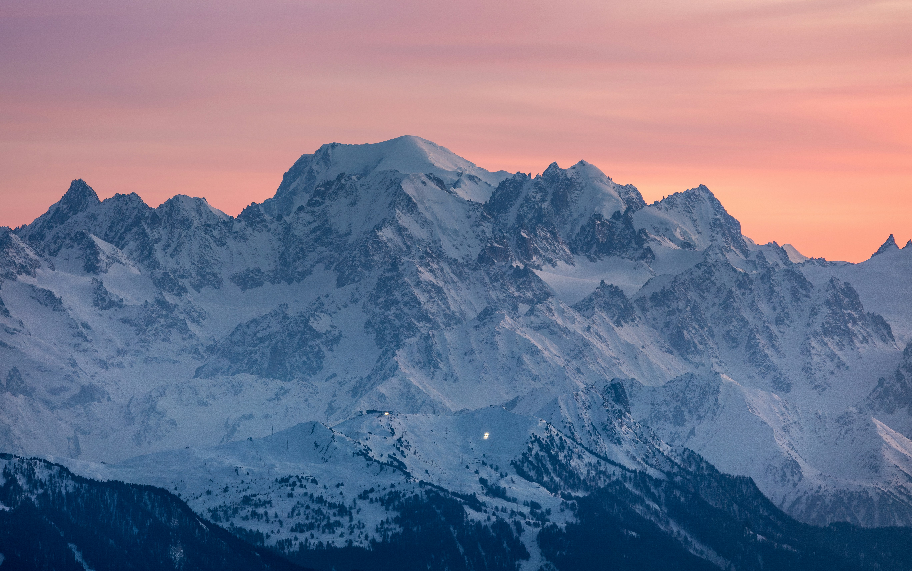

Welcome to Mont Blanc Climate Change Projection Project
This is the Mont Blanc:

History of Mont Blanc
Mont Blanc, meaning "White Mountain," is the highest mountain in the Alps and Western Europe. Located along the border of France and Italy, it has long been a symbol of exploration, adventure, and scientific discovery.
The first successful ascent of Mont Blanc took place in 1786 and is widely considered the beginning of modern mountaineering. Today, the region attracts millions of visitors from around the world and serves as an important site for environmental and climate research.
The french Alps are also home to other famous landmarks such as the Matterhorn. These mountains are often used for olympic training, and the Mont Blanc was the site of the first Winter Olympics
supports a massive ecosystem, providing water, etc... tourism supports a town at the base cultural icon The mont blanc is responsible for so much, yet so few understand its importance and how its being effected which is why weve created the projection project, to raise awareness.
Our Mission Statement
Learn the history of Mont Blanc, its importance to the Alpine environment, and how climate change is affecting one of Europe's most iconic mountain regions.
The Mont Blanc Climate Change Projection is an interactive 3D educational application designed to help users explore the environmental impacts of climate change on the Mont Blanc massif over time.
Combining machine learning projections with an intuitive 3D experience, users can visualize how glaciers, snow cover, and the surrounding environment may change over the next 50 years.
Using our project, users will visually see the impact of climate change on the mont blanc. Making it much easier to understand and a valuable tool for learning.
Why is this Important?
Mont Blanc is home to some of the most important glaciers and ecosystems in the Alps. Rising global temperatures are causing glaciers to retreat, reducing snow cover, and increasing the risk of rockfalls and habitat loss.
Understanding these changes helps scientists, policymakers, and the public make informed decisions about conservation, sustainability, and climate action. Through visualization and exploration, this project makes complex climate data easier to understand.